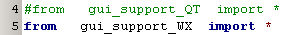
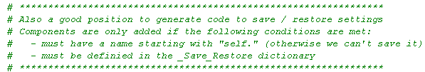

GUI support  ( December 2010 )
( December 2010 )
Application Designer / Domain Expert / Control Designer / Core Developer
Introduction
At this moment (december 2010) a lot of applications are moving from desktop applications to browser applications. Browser applications have a large different implementations / targets: client-side and or server-side, full desk top screen or smartphone. Now each of these implementations needs a different GUI package. Switching between them, requires a fairly amount of work. To give an impression of the tools used by us right now and the problems we encounter:
Wouldn't it be nice, if we could switch the desired target, with just a simple line of code in the main program. GUI-support is an attempt to realize this easy switching between different GUI targets and GUI backends.
Let's show a simple example first. The next Python code, defines a complete GUI window.
By uncommenting the desired single line in the main program, we can select if this GUI is created by wxPython or by PySide-QT

Selecting wxPython as the GUI back-end, we get the following result:
Selecting PySide-QT as the GUI back-end, we get the following result:
ToDo
Introduction
This library file is integral part of PyLab_Works and was never meant to be released as a separate package. Therefor the file contains a lot of dependencies which can easily be removed and therefor this page is just a quick and dirty compilation of some screen shots. Although these libraries might be very attractive for newbies to getting started, a firm warning should be placed: using these libraries prevents you from learning ( or let you forget ) the basic building of a GUI with wx-Python components and specially the use of sizers. Although the program works very well, it's still work in progress and will undergo more changes in the near future).
The library is tested under windows-XP, '2.8.7.1 (msw-unicode)' and Ubuntu wx 2.8 uni gtk+, both using Python 2.5
Creating a GUI in wxPython isn't easy. There are several tools to make this design easier, but I couldn't get one of them working. There is one that works (XRC), but I hate it I find XRC a typical example of "Why should we do it easy, as it can be done complex".
Therefor I created a simple solution, which is even more powerful than XRC.
Gui_support is a library, with the following features
The code for the application below (including saving and restoring the settings) is just 38 lines (see picture and the bottom).
Principle
The principle is to define the structure in a string, where the indentation defines which component is the container for other components. So each line in the string defines 1 component, and has the following syntax : name, type, arguments. If we simplify the above example to just the textcontrol at the left bottom and the notebook at the right, but keeping the automatically save and restore settings, the code looks like this (on the right the resulting GUI):
At line 30, we define a SplitterWindow, which is the container for the TextCtrl defined at line 31 and the Notebook defined at line 31.
The Notebook defined at line 32 is the container for the Panels (notebook-pages) p4 and p5.
Finally the GUI is generated by line 36.
Each component definition consists of a name, followed by the type, followed by any keyword-list the component can accept.
There are created a few new convenience components, like the "SplitterHor" (which produces a Vertically Splitter, weird naming !!) in the above example. But if you don't mind the weird naming and extra typing, you can of course also use the normal wx.SplitterWindow.
Furthermore, the settings are only restored (and can be saved later) if the component's name starts with "self.".
Even for very simple designs it works great, because you don't need to bother about sizers:
Class wxGUI_String
Class wxGUI_String is specially added if GUI-strings are created dynamicaly. The following picture shows the same example as above, but with several different approaches, using the wxGUI_String class:
Implicit Imports
The library file contains a dictionary, that defines implicit imports. This list can be expanded to your own needs. Whenever a type in the GUI-string is detected, and the type is defined in the dictionary and the import is not yet done, an extra import statement will be added.
Error reporting
If an error occurs during the creation of the GUI, the error is caught by the GUI-support library. The GUI-library will print the code generated by the GUI library, where each line will be preceded by a line-number and then print the error message itself. Because the error is caught, the program tries to continue its normal flow (during development this is sometimes very handy).
Below an example of in error in line 9 of the generated code. The error here is caused by a new graphical component "tScintilla_Editor" and we want to place that Editor (direct) on a page of a Notebook. To add a component to a new Notebook page, we need to give it a name and therefor in line 9 the name of the component tScintilla_Editor is asked, but the tScintilla_Editor has no method GetName.
To solve the above problem there are many solutions:
So here we'll choose for the second solution, but ...
... this gives an other error. You are only allowed to put wx.Window components on a Notebook page. So for the moment we'll choose the first solution. In a later stage I'll extend the gui-generator so it'll put a panel in between components if necessary.
Here an output of the improved error message (V1.6), which now specifies the file and line number.
Class Create_wxGUI
|
GUI = the string containing the GUI definition IniName = the string representation of the name of the inifile (if available) my_parent = string representation of the parent window. Because in general you'll define the outer window as a separate class, "self" will be ok. code = meant to cascade a number of string definitions |
|
This is a dummy method to find the end of the code for the F12 preview. |
Convenience Components
See for the latest extensions the source code. At the moment of the first release, the following convenience components were available:
Auto Save / Restore settings
If a component has the prefix "self." and it has the methods GetValue and SetValue, or replacements of GetValue and SetValue are defined in the table _Save_Restore, the settings of that component are automatically restored on creating the GUI. Saving must be done by calling the Save_Settings method on closure of the form or application:

Other Convenience functions
These classes are not only meant to prevent a lot of typing, but more over to prevent redundancy !!
F12 - Preview
For the preview the code starting with the GUI-string until the Create_wxGUI ( line 34 ) or to the Ready method (line 38) is executed. This code is packed into a frame and completed with an wx-application. The wrapper is defined in the file '../support/gui_template_dont_touch.py'. This file can be changed if other wrapper code is needed.
To use the preview just call the function PreView_wxGUI with the whole text of an editor. Here is the call I use in my editor

Full demo code